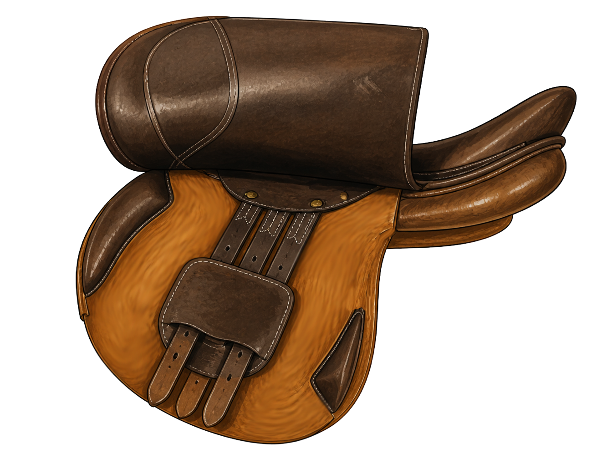
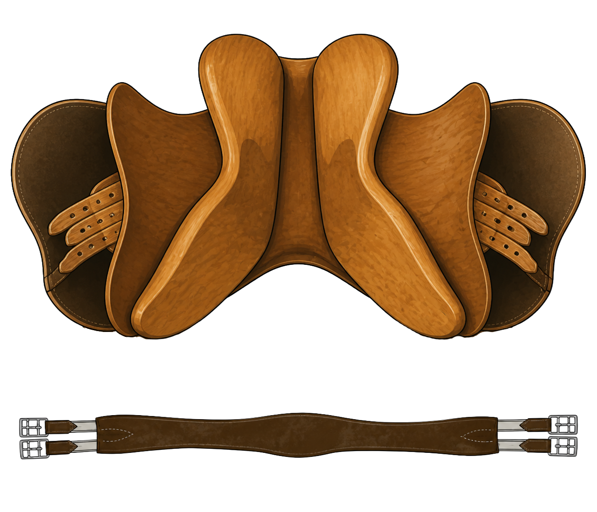

What the Tree Does
The tree forms the main shape of the saddle. The bars of the tree run along either side of the horse's spine so the saddle can carry weight without placing direct pressure on the spine or withers.
Use the tabs to study the major parts of an English saddle and English bridle.
An English saddle is built to support rider balance, distribute weight, and suit disciplines such as hunter, jumper, dressage, eventing, saddle seat, and everyday schooling.
Drag a navy label to move the label. Drag the small blue dot to move the point it labels. When the placement is ready, use Copy Positions and send me the JSON so I can bake the labels into the course.

Lift the saddle flap to see the knee block, billets, thigh block, buckle guard, and related flap structure.

View the underside to study the panels, gullet channel, girth, and lower saddle structure.

An English bridle holds the bit or bitless attachment in position and connects the rider's reins to the horse through familiar parts such as the crownpiece, browband, cheekpieces, cavesson, and reins.
Drag a navy label to move the label. Drag the small blue dot to move the point it labels. When the placement is ready, use Copy Positions and send me the JSON so I can bake the labels into the course.

The saddle tree is the inner frame that gives an English saddle its shape. It is the structure the rest of the saddle is built around, including the pommel, cantle, seat, panels, flaps, and leather covering.

The tree forms the main shape of the saddle. The bars of the tree run along either side of the horse's spine so the saddle can carry weight without placing direct pressure on the spine or withers.
The width and angle of the tree need to match the horse's back. If the tree is too narrow, too wide, too long, or uneven, the saddle may pinch, bridge, rub, or create sore spots.
Leather, the seat, panels, flaps, billet area, pommel, and cantle are shaped around the tree. That is why the tree is often described as the foundation of the English saddle.
A well-fitting saddle should sit level, stay centered, allow wither clearance, and make even contact through the bars. Soreness, dry pressure spots, rubbing, or uneven contact are signs the saddle fit should be checked.